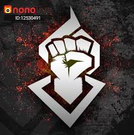

Acerca de mi
Tengo 20 años, soy amante de los videojuegos y escuchar música de vez en cuando
fui atleta de taekwondo por 12 años y ahora solo me dedico a estudiar y trabajar.
Empecé a estudiar en CUCEI hace 2 años y voy en quinto semestre, espero poder graduarme pronto
y poder empezar a trabajar.
Lista de mis objetivos a futuro
- Tener un trabajo estable
- Pagar los estudios de mi hermano
- Aprender nuevos lenguajes de programación
- No se que poner aqui
- Este tambien es relleno
Empleos / Historial académico
Trabajos
- La palapa del guayabo 2012-2017
- La casa del waffle 2017-2018
- La palapa del guayabo 2018-Actualmente
Persona que admiro: Alejandro Leyva (MYM ALK4PON3)
Admiro a Alejandro Leyva porque he aprendido muchas cosas de él y de la comunidad que creó
Me gustan mucho tanto sus videos como streams que hace, es alguien muy gracioso, además de
que ha ayudado
muchas veces a niños con cáncer a través de asociaciones no gubernamentales
Puedes revisar su biografía aquí

Temas de interés
| tema de interés |
clasificación |
| Videjuegos |
Entretenimiento |
| Cine |
Entretenimiento |
| taekwondo |
deporte |
Formulario